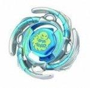

Aquario 105F
| Aquario 105F | |
|  | |
| Number: | BB-21 |
|---|---|
| System: | Metal System |
| Type: | Attack |
Contents
Face: Aquario
This Face depicts Aquarius, the eleventh astrological sign in the zodiac.
Wheel: Aquario
- Weight: 35.5 grams
This Wheel is generally rounded with four textured fins protruding from its circumference, forming waves. Between these fins are empty semicircles used to prevent (early) breakage. Aquario, just like Wolf, has its protrusions facing the opposite way to its spin direction, presumably to avoid the massive Recoil that would be experienced if they had been facing the right direction. Since only the rounded parts of the protrusions can be used for Attack, its offensive potential is mediocre. The considerable space between each wave also prevents it from being efficient in Defense and Stamina, as it would need a more united, even rounder shape. At release, the fins of Aquario provided a decent amount of Smash Attack, but now it definitely does not compare to the existing top-tier Wheels, and many other Wheels from lower tiers even.
IMPORTANT: Mold Variations
A second mold variation of the Aquario Wheel was introduced when this bey was re-released as a "PREMIUM RETURN" in BB-72 Booster Aquario 105F, in order to correspond with the "Beyblade Metal Fight Explosion", the second season of the anime. This new mold is slightly heavier compared to the first mold, but the effect this has on the Beyblade's performance is minimal to non-existent. The exact weight is 36.6 grams. This second mold also uses a darker colour of paint.
Track: 105
| Weight: | 1 gram | Width with Handles: | 22.0 mm | Maximum Width: | 18.0 mm | Minimum Width: | 16.0 mm | Core Cylinder Diameter: | 11.0 mm | Full Height: | 10.50 mm |
This Track is currently the fourth lowest Track available, but is outclassed in terms of Attack and Stamina by the 85, 90, and 100 Tracks. 105 has no problem with floor scrapes, but still is an outclassed part and should only be chosen when none of the aforementioned Tracks are available.
Bottom: Flat
| Weight: | 1 gram | Full Width: | 15.92 mm | Tip Width: | 4.08 mm | Full Height: | 8.96 mm | Tip Height: | 5.96 mm |
The Flat Bottom has a plastic flat tip, which gives it an offensive movement pattern. It is the equivalent of Flat Core (HMS) or SG Flat (Plastic). The F Bottom has a hard time retaining a flower pattern, due to it being plastic, which results in it having less grip to the stadium floor than a rubber bottom. F has been overshadowed by countless other Attack Bottoms such as XF, MF, RF, and R2F.
Other Versions
- Aquario 105B - BB-25 Random Booster Vol.2 Legend Pisces (Orange)
- Aquario DF145SF - BB-25 Random Booster Vol.2 Legend Pisces (Green)
- Aquario 105F - BB-72 Booster (Darker blue)
Gallery
Aquario DF145SF - (Green)
-
Top view
-
Underside view
-
1/2 underside view
Overall
Due to the lack of competitive use for each of Aquario's parts, there is little to no reason to buy this Beyblade other than for collection purposes.